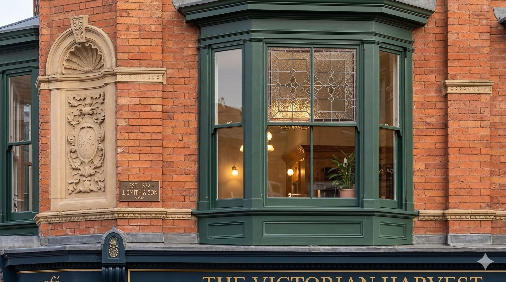
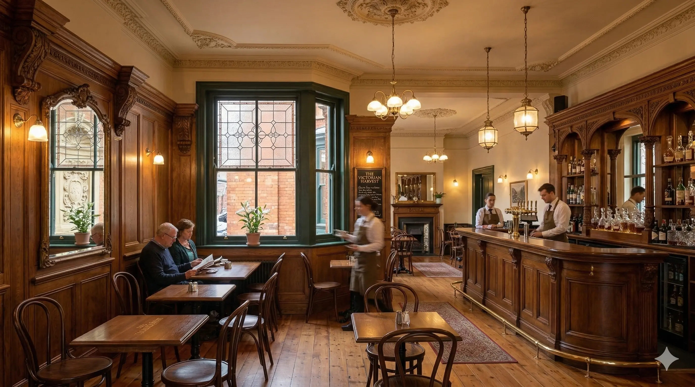

Heritage Restoration
Location: Fictional Historic District · Year: 2018
Overview
Conservation and restoration of a listed historic building: repair of the street facade, reinstatement of original windows, and sensitive upgrade of the interior to meet current use while preserving character and fabric.
Placeholder project for testing. Different photo credits per image are used for automation testing.



Awards
- Heritage Conservation Award (Fake), 2019
- Preservation Excellence (Fake), 2018